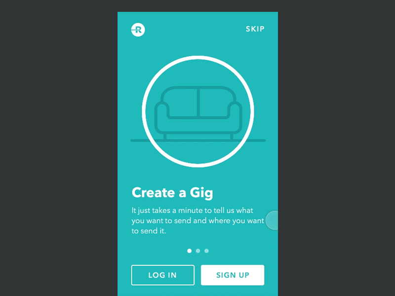
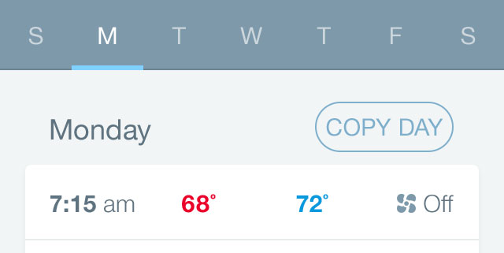
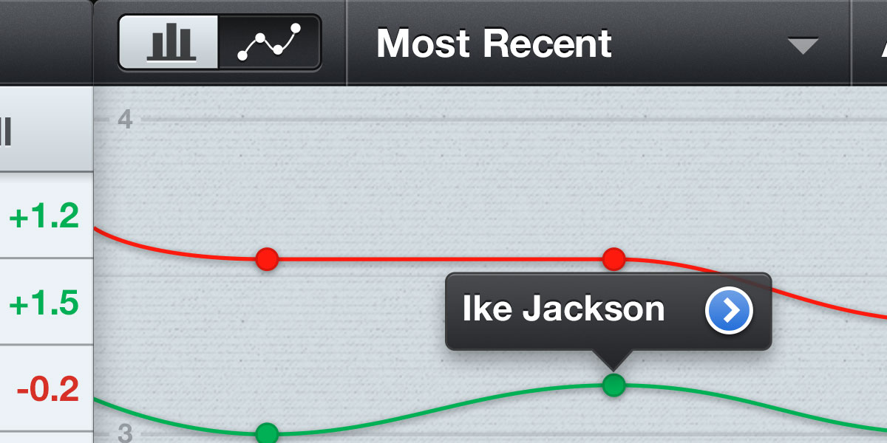
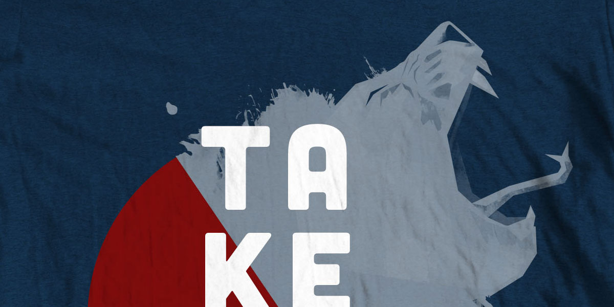

Brian Harper
Oh, hello. I design software at Workday and play violin with Takénobu. I've done some other things in the past, and I'll do some more things in the future. Thanks for stopping by.
TwitterDribbbleLinkedIniOS, Android, & Web Product Design
I led the Product Design team at Roadie, the on-the-way delivery network. Through user interviews, analytics, support tickets, and our guts, we continuously found ways to improve the experience of sending and driving with Roadie. My role was to contribute design from concept to implementation while empowering the team to deliver better work through critiques, workflow, and collaboration. I also led a bi-weekly company-wide presentation of our team's work to promote transparency and collaboration throughout the entire organization.
Check out the iOS App, Android App, and roadie.com.
iOS & Android User Experience Design
I worked with my colleagues at stable|kernel, product owners from Rheem, and existing design from Tailfin & Big Red Rooster to deliver a significant update to the Rheem EcoNet mobile apps. During a 3 month period, we shipped features that enable users to adjust their thermostats, set schedules for their HVACs and water heaters, and trigger Vacation mode to save energy while away from the home.
Read the Case Study or download the iOS App & Android App.
iOS User Experience Design
I worked closely with developers at Big Nerd Ranch and product owners at Procter & Gamble to create a suite of apps to help their 110,000 employees work more efficiently. iBinder enables sales people to organize and present sales material on an iPad. iFactbook allows employees to access and annotate secure private documents on an iPad. myCoach helps managers track their employees' performance over time.
These apps are featured in the iPad in Business case study from Apple.
iOS, Mac, and Web Product Design
eClicker is an iOS and Mac app that helps teachers get real-time feedback from students in the classroom and quickly gauge comprehension. It replaces expensive hardware clicker solutions by leveraging the smartphones that students already have with them.
In 2012, I worked closely with Alex Silverman to completely redesign eClicker from the ground up. The redesigned version of eClicker enables teachers to create questions, broadcast them to students with smartphones, and receive immediate feedback.
Print Design
Takénobu is the moniker of Atlanta-based cellist Nick Ogawa. I first saw him play when my band, Blee's Company, opened for him in 2010. A few months later when my band stopped playing, Nick gave me a call and asked if I wanted to play violin with him. We've been recording music and playing live shows ever since. Every band needs t-shirts and posters, so I've had the opportunity to design some of those as well.
Listen to Takénobu.
Presented at CocoaHeads ATL
How Designers and Developers Can Work TogetherPresented at CocoaConf 2013
iOS Mobile Design WorkshopCourse created with the team at Big Nerd Ranch and delivered around the world
Android Mobile Design WorkshopCourse created with the team at Big Nerd Ranch and delivered around the world
Six Design PrinciplesWritten for stable/kernel
A Mobile Designer's First Step Into Git & XcodeWritten for stable/kernel
My App Design SetupWritten on Medium